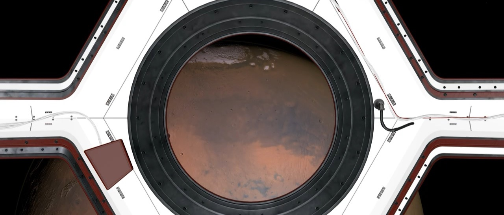
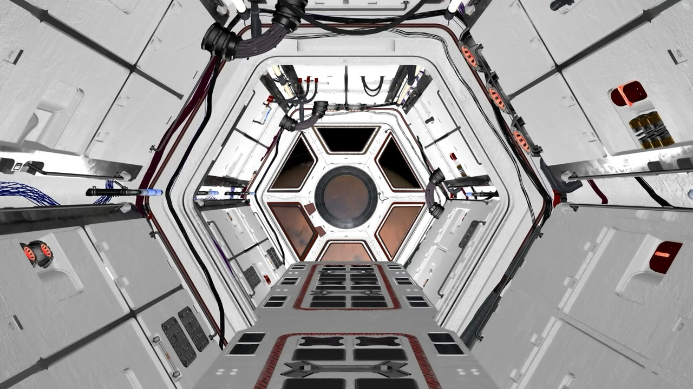
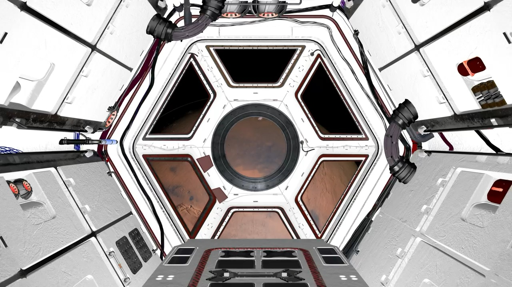
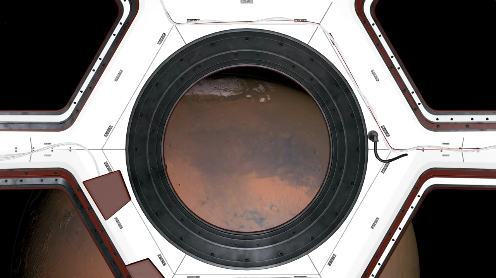
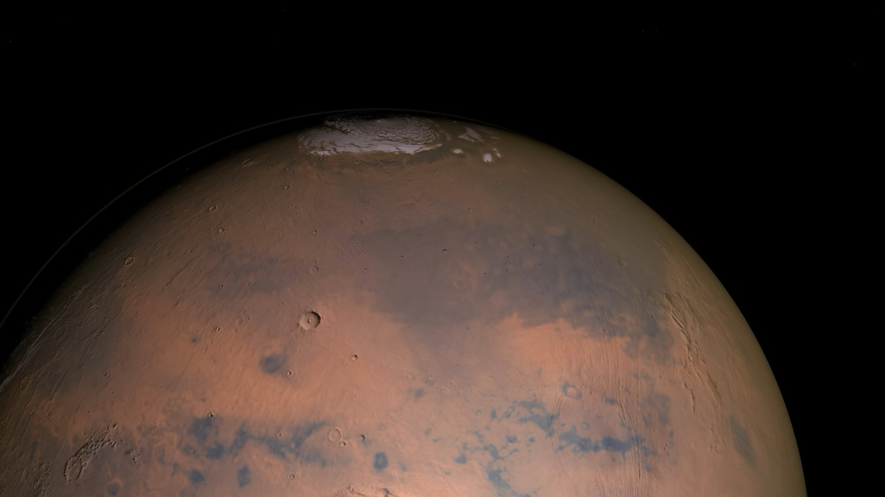

00:00 / 00:00
艺术短片 / 2025 / 9 分钟 · 导演 Ye · 编剧 Ye · 摄影 陈默 · 剪辑 Ye · 声音 白噪工作室 · 主演 周野 / 苏行 · 1.85:1 / 5.1
项目档案只读
最后更新 2026.03.02Ye / 导演
白色走廊
一艘殖民舰在宇宙里飞了四十年，走廊却还在变长。我们用一个几乎空白的空间，拍一部关于“重复”的恐怖片——观众不会立刻发现哪里不对，只会觉得呼吸变浅。
“走廊没有尽头，恐惧有。”

制作工具
- 1:1 实景搭建
- 长镜头调度
- 脚步与低频采样
- 冷白荧光布光
01 · 缘起
灵感来自一次在酒店走廊里迷路的经历。所有的门都一样，所有的指示牌都指向同一个方向。你开始怀疑不是自己迷路，而是走廊在移动。
我们只搭了三十米走廊，靠重复拍摄和轻微的美术变化，让它长到四百二十步。
02 · 世界
飞船没有窗户，只有一条走廊。所有舱门都通向同一个房间，但每次打开，房间里的东西会少一件。
领航员把每天经过的门画在纸上。纸越来越长，飞船越来越小。
03 · 视觉语言
40 毫米球面镜头、冷白荧光、完全对称的构图。固定机位让重复自己发酵，人物从画面深处走来，又在同一个位置消失。
唯一的暖色来自舷窗外的行星。它不提供希望，只提供尺度。
04 · 制作规格
实拍 9 天，全部在一条可拆装的走廊景中完成。声音使用了真实脚步、旧日光灯和低于人耳阈值的低频；剪辑 6 周。
资产画布




命名约定
场景ye_走廊_场景_通道_v04
道具ye_走廊_道具_舱门_v02
画面ye_走廊_画面_舷窗_v03
镜头ye_走廊_镜头_420_v01
色板
规格表
- 片长
- 9 分钟
- 画幅
- 1.85:1
- 声音
- 5.1
- 拍摄
- 9 天，2025 夏
- 版本
- 数字电影包 / 高质量母版
走廊没有怪物。只有“再一次”。
项目档案 · 白色走廊上海 · 2025